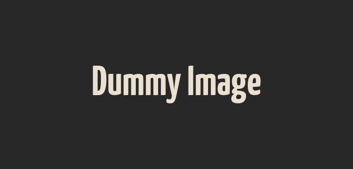

sitename
私の思い描いている「あたたかみのある会社」のデザインに忠実に再現してくれた。
またデザイン案の選択で迷った際もお客視点で納得のある助言をしてくださり
デザイン知識の疎い私にとっては非常に助かった。
今後もサイトを作成する機会があれば依頼したい。
私の思い描いている「あたたかみのある会社」のデザインに忠実に再現してくれた。
またデザイン案の選択で迷った際もお客視点で納得のある助言をしてくださり
デザイン知識の疎い私にとっては非常に助かった。
今後もサイトを作成する機会があれば依頼したい。